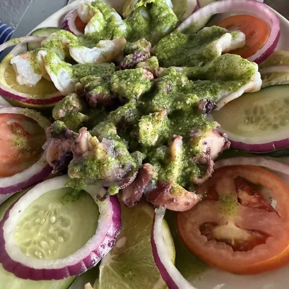
Aguachile
Pregunta el precio
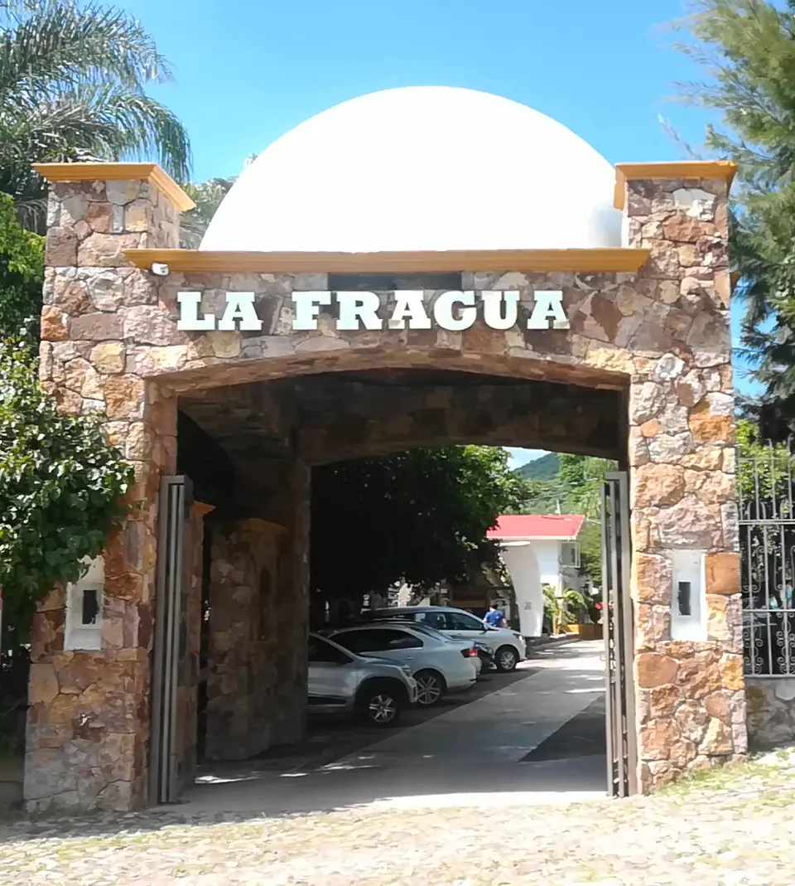
Presa La Codorniz, CalvilloCarr. La Panadera-Palo Alto, Km 25
4.6 en Google, 3,193 opiniones
La carta
Toca Agregar y arma tu mesa. Más abajo la avisas con una llamada.

Pregunta el precio
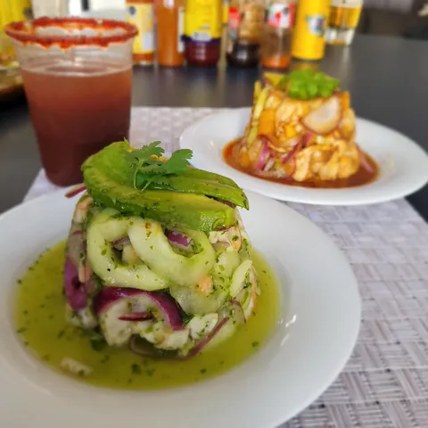
Pregunta el precio
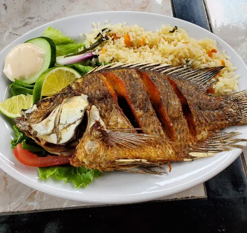
Pregunta el precio
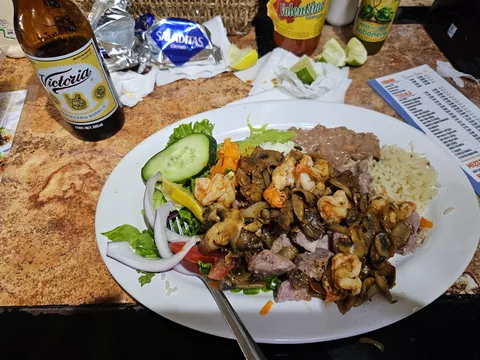
Pregunta el precio
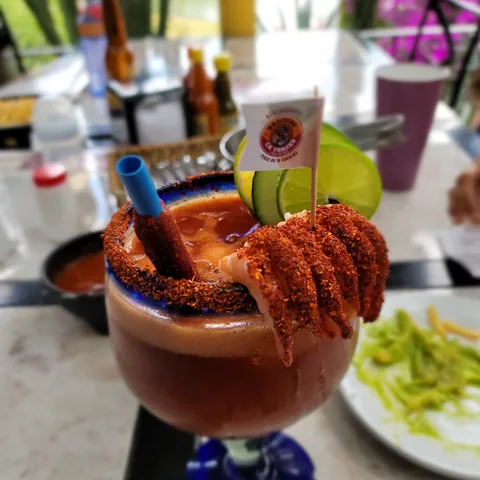
Pregunta el precio
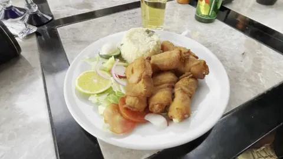
Pregunta el precio
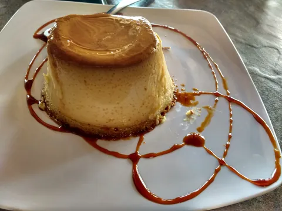
Pregunta el precio
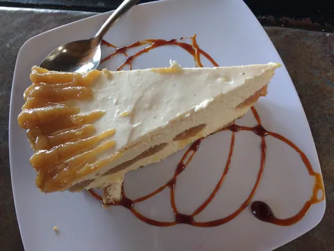
Pregunta el precio
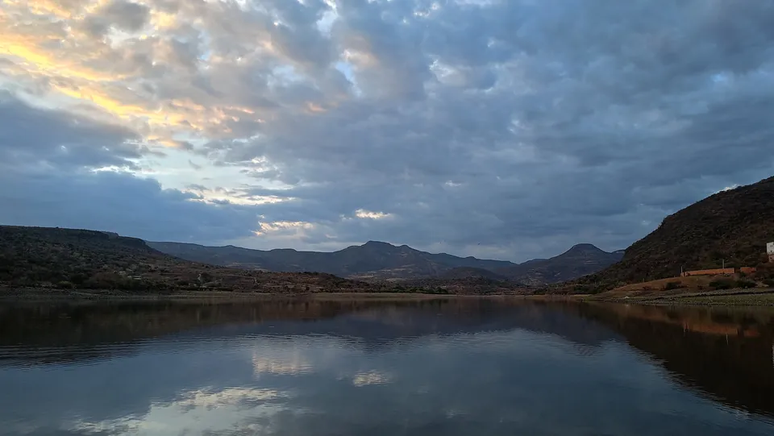
Vista a la presa La Codorniz
Opiniones
Y 4.4 con 1,365 opiniones en la casa de Calvillo centro.
Lo mejor de este lugar, que por cierto es muy espacioso, es su vista a la presa la Codorniz.
Muy buen servicio, el lugar es muy bonito, familiar y cómodo, y la comida está muy rica.
Excelente lugar. La comida y el servicio muy buenos.
Recomendable el chicharrón de camarón y los camarones al mojo de ajo.
Mariscos frescos a buen precio, atención buena y rápida.
Camarones momia y Torre de mariscos muy ricos.
El lugar
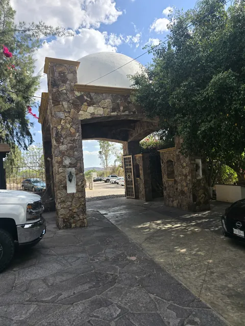
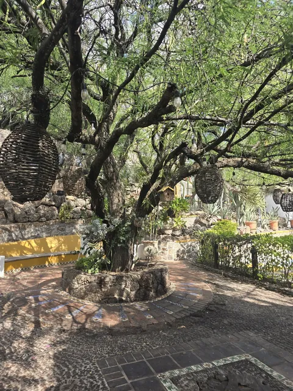
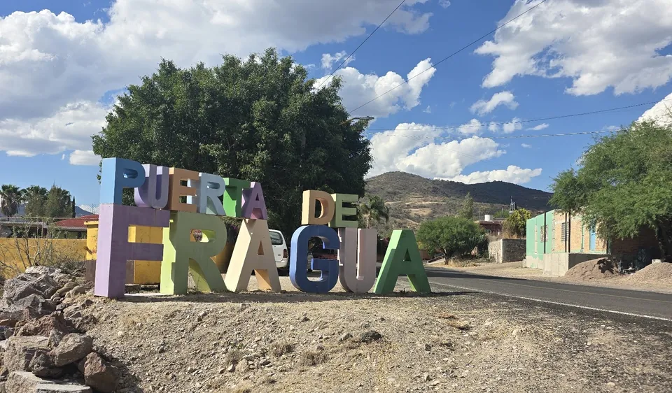
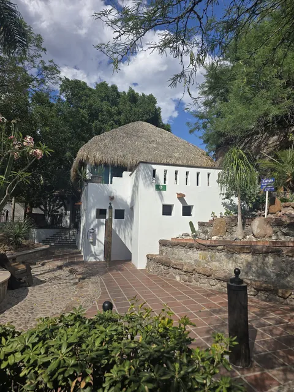
Visítanos
Consultando horario
Carr. La Panadera-Palo Alto, Km 25Puerta de Fragua, 20830 Calvillo, Ags.
Tel. 495 958 2200
Hay consumo en el lugar, para llevar y a domicilio.
Consultando horario
5 de Mayo 207, Zona Centro20800 Calvillo, Ags.
Tel. 495 956 0086
Mesas al aire libre. Se acepta tarjeta.
Falta poco
Pásanoslo por el mismo chat donde te llegó esta muestra.